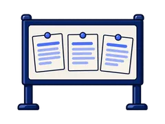

My Personal AI Rulebook
You write one short page about how you use AI tools. Write it about yourself, in your own words.
The tools I am approved to use
You name your AI tool, your account, your device and your helper.
How I check
You say what you mark and what you check it against.
AAI-E-MC1-S03-RULE01 · Element 4
Why should you keep a rulebook?
A rulebook is not extra paperwork. It is one page that shows how you work.
Your task. Tap each card to see one reason.
Here is a finished rulebook page.
This person is made up. Copy the shape of the answers, not the details.
Your task. Look at both examples, then answer the question.
What do you copy from this example?
Which AI tool are you approved to use?
Your task. Type the name of your AI tool, then tap your type of account.
Example: “SwiftChat, approved by my facilitator”
Which device do you use, and who helps you?
Your task. Tap your device, then type who you ask for help.
Example: “My facilitator”. Never type a phone number or an ID.
What do you check before you trust an answer?
Your task. Tap what you mark, then tap each step of your method.
What do you check your AI answers against?
Your task. Type your sources, then tick the box and type your peer's name.
Example: “the tool register, the notice board, my facilitator”

Now you sign and date your page.
Your task. Check the version and the date, then tap the declaration.
Here is your rulebook page 1.3.
Your task. Check that every part is filled in, then tap Download my page.